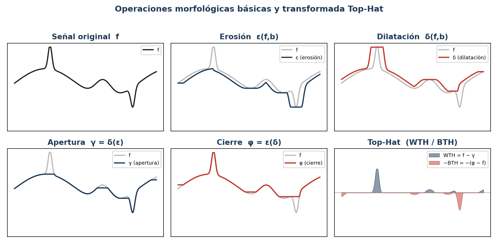
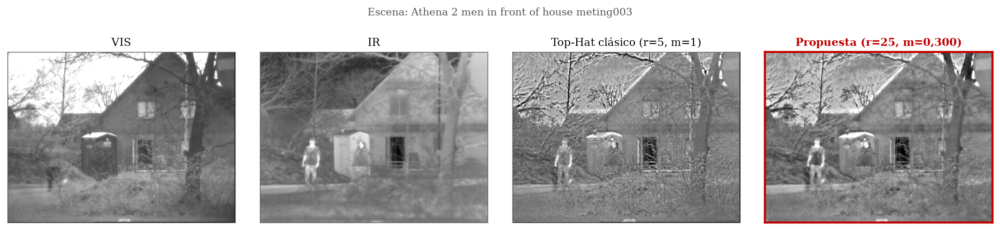
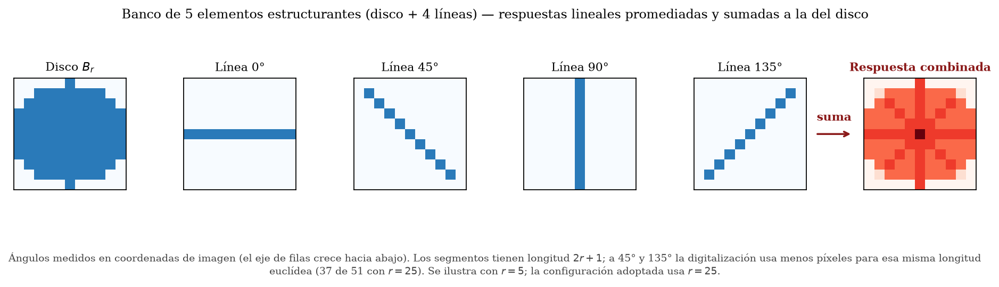
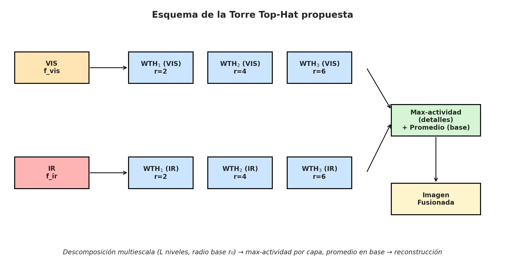
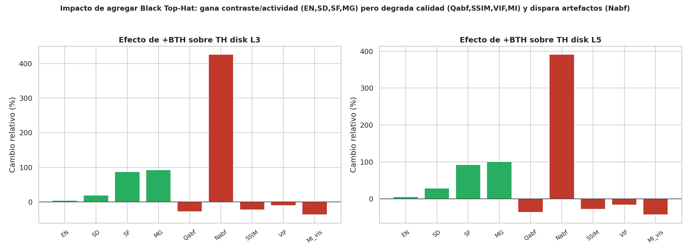
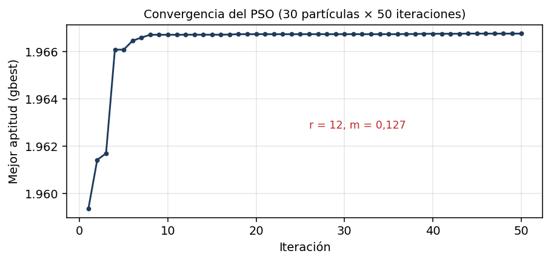
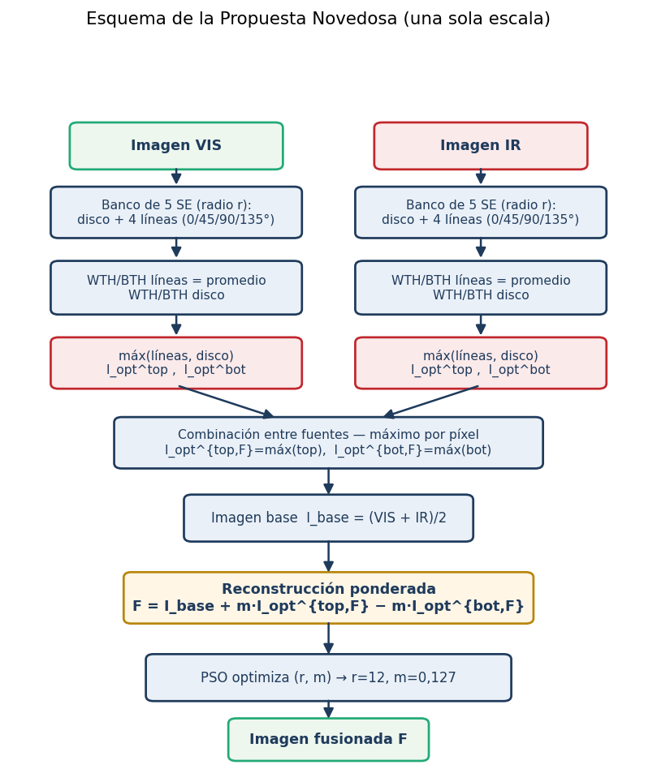
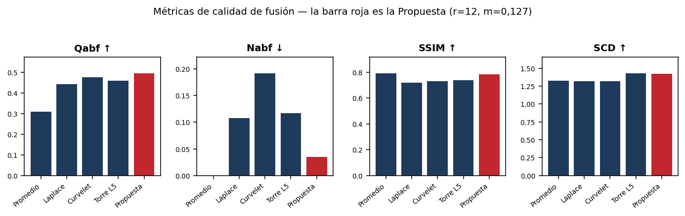
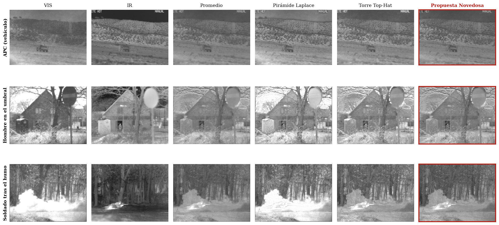
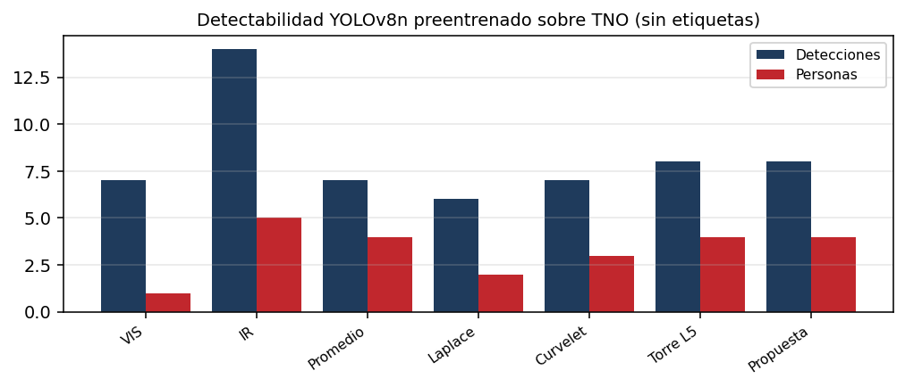

Universidad Comunera (UCOM) — Maestría en Ciencias de Datos
Presentación de avances
Procesos realizados, fórmulas y métricas por etapa
Autores: Lic. Juan Pablo Bazán — Ing. Yan Bajac
Director: D.Sc. Julio César Mello
Actualizado — propuesta de una sola escala (r=12, m=0,127)
Este informe documenta, paso por paso, el trabajo realizado en el proyecto de tesis. En cada etapa se presentan las fórmulas utilizadas y la tabla de métricas que esa etapa dejó resuelta, de modo que pueda seguirse cómo cada decisión fue tomada en base a los resultados numéricos.
El orden del documento es el siguiente:

Se trabaja con los 20 pares registrados del TNO Image Fusion Dataset (escenas de vigilancia nocturna: vehículos, personas, humo). Cada escena tiene una imagen visible (VIS), que aporta textura y contexto, y una infrarroja (IR), que registra la radiación térmica. Ambas comparten nombre de archivo para el emparejado automático. Sobre estos 20 pares se calculan todas las métricas del informe.

Dado un elemento estructurante (SE) b, la dilatación toma el máximo local y la erosión el mínimo. Su composición define la apertura γ (elimina objetos claros menores que el SE) y el cierre φ (rellena huecos oscuros menores que el SE). La transformada Top-Hat conserva lo que la apertura o el cierre eliminan: la White Top-Hat (WTH) extrae el detalle brillante fino y la Black Top-Hat (BTH) el detalle oscuro fino:

Como línea de base morfológica se fusionó con Top-Hat usando una sola familia de SE por vez (disco, cuadrado y cruz a 3 niveles, y disco a 5 niveles), con la regla clásica: detalle por máximo y base por promedio.
Tabla 1. Métricas de las fusiones Top-Hat simples (promedio de 20 pares).
| EN ↑ | SD ↑ | FE ↑ | MG ↑ | MI_vis ↑ | MI_ir ↑ | SF ↑ | Qabf ↑ | Nabf ↓ | SSIM ↑ | SCD ↑ | VIF ↑ | |
|---|---|---|---|---|---|---|---|---|---|---|---|---|
| Torre Top-Hat disco L3 | 6.676 | 0.12 | 1.055 | 0.023 | 1.395 | 0.918 | 11.627 | 0.456 | 0.102 | 0.744 | 1.397 | 0.352 |
| Top-Hat cuadrado L3 | 6.69 | 0.121 | 1.057 | 0.023 | 1.391 | 0.914 | 11.576 | 0.439 | 0.104 | 0.741 | 1.404 | 0.353 |
| Top-Hat cruz L3 | 6.663 | 0.119 | 1.052 | 0.023 | 1.383 | 0.938 | 11.419 | 0.456 | 0.107 | 0.749 | 1.392 | 0.344 |
| Torre Top-Hat disco L5 | 6.722 | 0.125 | 1.062 | 0.024 | 1.363 | 0.914 | 11.923 | 0.458 | 0.117 | 0.739 | 1.43 | 0.356 |
Lectura: las tres formas prácticamente empatan (Qabf 0,439–0,456; SSIM ≈ 0,74). La forma del SE por sí sola no alcanza; hay que combinar formas y escalas.
La Torre Top-Hat (método anterior del grupo) apila escalas con un único disco creciente y reglas de selección manuales. Sobre ella se ensayó acentuar la rama Black Top-Hat (detalle oscuro).

Tabla 2. Efecto de la rama BTH (promedio de 20 pares).
| EN ↑ | SD ↑ | FE ↑ | MG ↑ | MI_vis ↑ | MI_ir ↑ | SF ↑ | Qabf ↑ | Nabf ↓ | SSIM ↑ | SCD ↑ | VIF ↑ | |
|---|---|---|---|---|---|---|---|---|---|---|---|---|
| Torre Top-Hat disco L5 | 6.722 | 0.125 | 1.062 | 0.024 | 1.363 | 0.914 | 11.923 | 0.458 | 0.117 | 0.739 | 1.43 | 0.356 |
| Disco L5 + rama BTH | 7.106 | 0.161 | 1.124 | 0.047 | 0.773 | 0.595 | 22.94 | 0.291 | 0.575 | 0.534 | 1.279 | 0.298 |
| Disco L3 + rama BTH | 6.972 | 0.143 | 1.102 | 0.044 | 0.876 | 0.618 | 21.744 | 0.326 | 0.537 | 0.577 | 1.341 | 0.314 |
Lectura: la rama BTH sube el contraste (SF de 12 a 22) pero multiplica por cinco los artefactos (Nabf 0,117→0,54–0,57) y hunde la SSIM (0,74→0,53–0,58). Quedó descartada del método final.

Tabla 3. Métricas de los métodos clásicos (promedio de 20 pares).
| EN ↑ | SD ↑ | FE ↑ | MG ↑ | MI_vis ↑ | MI_ir ↑ | SF ↑ | Qabf ↑ | Nabf ↓ | SSIM ↑ | SCD ↑ | VIF ↑ | |
|---|---|---|---|---|---|---|---|---|---|---|---|---|
| Promedio | 6.518 | 0.109 | 1.029 | 0.014 | 1.512 | 1.064 | 7.112 | 0.31 | 0.0 | 0.792 | 1.325 | 0.331 |
| Pirámide de Laplace | 6.835 | 0.155 | 1.079 | 0.025 | 2.118 | 1.072 | 13.04 | 0.442 | 0.108 | 0.721 | 1.322 | 0.41 |
| Curvelet | 6.665 | 0.117 | 1.053 | 0.026 | 1.304 | 0.884 | 13.151 | 0.476 | 0.192 | 0.731 | 1.321 | 0.307 |
Lectura: Laplace es el rival más fuerte (VIF 0,410) aunque añade artefactos (Nabf 0,108); Curvelet preserva bordes (Qabf 0,476) pero es el más ruidoso (Nabf 0,192); el Promedio es limpio pero borroso. El objetivo: bordes como Curvelet con la limpieza del Promedio.
Los dos hiperparámetros del operador propuesto —el radio r del banco de elementos estructurantes y el peso de contraste m— se ajustan por Optimización por Enjambre de Partículas (PSO). Cada partícula es un candidato x = (r, m) que se mueve atraído por su mejor posición personal y por la mejor global; la función de aptitud premia similitud estructural, preservación de bordes y correlación, y penaliza los artefactos:

El enjambre (30 partículas, 50 iteraciones) convergió de forma estable al óptimo r = 12, m = 0,127. La aptitud crece de forma marginal y saturante con el radio, por lo que r = 12 es un punto de operación equilibrado. La Tabla 4 muestra la sensibilidad al radio.
Tabla 4. Sensibilidad al radio r (m = 0,127; promedio de 20 pares).
| r | Qabf ↑ | SSIM ↑ | SCD ↑ | Nabf ↓ |
|---|---|---|---|---|
| r = 6 | 0.482 | 0.785 | 1.384 | 0.031 |
| r = 9 | 0.49 | 0.784 | 1.405 | 0.034 |
| r = 12 (óptimo) | 0.495 | 0.783 | 1.421 | 0.035 |
| r = 15 | 0.497 | 0.783 | 1.432 | 0.036 |
| r = 18 | 0.498 | 0.783 | 1.438 | 0.036 |
| r = 22 | 0.499 | 0.783 | 1.445 | 0.037 |
Lectura: al aumentar r mejoran levemente Qabf y SCD a costa de una caída mínima de SSIM y un pequeño aumento de Nabf; r = 12 equilibra los cuatro criterios con un SE de tamaño razonable.
La aportación central de la tesis. Sobre una sola escala (radio r) se calculan, en cada fuente, cinco transformadas Top-Hat: las cuatro respuestas lineales (0°, 45°, 90°, 135°) se promedian —atenuando el ruido direccional (esquema de Bala et al., 2024)— y la del disco se calcula por separado:
La novedad respecto de Bala et al. (que suman ambas respuestas) es combinarlas por máximo por píxel, conservando en cada punto la estructura más fuerte, sea orientada o isótropa:
Entre fuentes se toma el detalle dominante y se reconstruye sobre la imagen base con el peso de contraste m:

Tabla 5. La propuesta (r = 12, m = 0,127) frente al método anterior y a los baselines (promedio de 20 pares; en negrita el mejor de cada columna).
| EN ↑ | SD ↑ | FE ↑ | MG ↑ | MI_vis ↑ | MI_ir ↑ | SF ↑ | Qabf ↑ | Nabf ↓ | SSIM ↑ | SCD ↑ | VIF ↑ | |
|---|---|---|---|---|---|---|---|---|---|---|---|---|
| Promedio | 6.518 | 0.109 | 1.029 | 0.014 | 1.512 | 1.064 | 7.112 | 0.31 | 0.0 | 0.792 | 1.325 | 0.331 |
| Pirámide de Laplace | 6.835 | 0.155 | 1.079 | 0.025 | 2.118 | 1.072 | 13.04 | 0.442 | 0.108 | 0.721 | 1.322 | 0.41 |
| Curvelet | 6.665 | 0.117 | 1.053 | 0.026 | 1.304 | 0.884 | 13.151 | 0.476 | 0.192 | 0.731 | 1.321 | 0.307 |
| Torre Top-Hat disco L5 | 6.722 | 0.125 | 1.062 | 0.024 | 1.363 | 0.914 | 11.923 | 0.458 | 0.117 | 0.739 | 1.43 | 0.356 |
| Propuesta Novedosa (r=12, m=0,127) | 6.613 | 0.115 | 1.044 | 0.019 | 1.374 | 0.927 | 9.519 | 0.495 | 0.035 | 0.783 | 1.421 | 0.361 |
Lectura: la propuesta logra la menor tasa de artefactos entre los métodos reales (Nabf = 0.035) y la mayor similitud estructural no trivial (SSIM = 0.783), con la mejor preservación de bordes y correlación de su familia (Qabf = 0.495; SCD = 1.421). Cede en contraste bruto (SD, SF), el compromiso de diseño buscado.
Todas las métricas son sin referencia (no existe imagen fusionada ideal). Se agrupan en: información y contraste (entropía EN, desviación SD), nitidez y actividad (gradiente medio MG, frecuencia espacial SF), información mutua con cada fuente (MI_vis, MI_ir), preservación de bordes de Xydeas–Petrović (Qabf; su complemento Nabf mide los artefactos), similitud estructural (SSIM) y correlación de las diferencias (SCD). Se agregan VIF, FMI y los índices de Piella (Q0, QW, QE). Todas se maximizan salvo Nabf, que se minimiza. La comparación de las 12 métricas principales se dio en la Tabla 5; la Tabla 6 añade FMI y la familia de Piella.
Tabla 6. Métricas FMI y familia de Piella (Singh et al., 2023).
| Método | FMI ↑ | Q0 ↑ | QW ↑ | QE ↑ |
|---|---|---|---|---|
| Promedio | 0.215 | 0.691 | 0.727 | 0.341 |
| Pirámide de Laplace | 0.276 | 0.744 | 0.856 | 0.404 |
| Curvelet | 0.197 | 0.727 | 0.823 | 0.369 |
| Torre Top-Hat disco L5 | 0.213 | 0.743 | 0.81 | 0.36 |
| Propuesta Novedosa (r=12, m=0,127) | 0.209 | 0.758 | 0.808 | 0.371 |

Lectura: la propuesta encabeza Qabf entre los métodos reales y mantiene la mayor SSIM no trivial y el menor Nabf; Laplace lidera la familia de Piella (QW) por su mayor contraste.
Se aplica primero el test de Friedman (13 métodos × 20 imágenes, por rangos) a cada métrica. Las 12 métricas rechazan la hipótesis nula con p ≪ 0,001: existen diferencias reales entre métodos.
Tabla 7. Resultados del test de Friedman.
| Métrica | χ² de Friedman | p-valor | Significativa (α=0,05) |
|---|---|---|---|
| EN | 200.1 | 1.3e-35 | Sí |
| SD | 230.6 | 6.6e-42 | Sí |
| FE | 200.1 | 1.3e-35 | Sí |
| MG | 241.5 | 3.6e-44 | Sí |
| MI_vis | 195.9 | 9.7e-35 | Sí |
| MI_ir | 185.4 | 1.4e-32 | Sí |
| SF | 243.3 | 1.6e-44 | Sí |
| Qabf | 203.9 | 2.2e-36 | Sí |
| Nabf | 238.1 | 1.9e-43 | Sí |
| SSIM | 246.9 | 2.9e-45 | Sí |
| SCD | 145.0 | 2.1e-24 | Sí |
| VIF | 222.6 | 3.0e-40 | Sí |
Cada comparación de la propuesta contra un rival usa el test de Wilcoxon de rangos con signo sobre las 20 imágenes, con corrección de Holm por métrica. La Tabla 8 indica si la propuesta resulta significativamente mejor, peor o sin diferencia (≈) frente a cada rival.
Tabla 8. Resultado de los 48 contrastes (Wilcoxon con corrección de Holm).
| Métrica | vs. Promedio | vs. Laplace | vs. Curvelet | vs. Torre L5 |
|---|---|---|---|---|
| EN | mejor | peor | peor | peor |
| SD | mejor | peor | peor | peor |
| FE | mejor | peor | peor | peor |
| MG | mejor | peor | peor | peor |
| MI_vis | peor | peor | mejor | mejor |
| MI_ir | peor | ≈ | mejor | mejor |
| SF | mejor | peor | peor | peor |
| Qabf | mejor | ≈ | mejor | ≈ |
| Nabf | peor | mejor | mejor | mejor |
| SSIM | peor | mejor | mejor | mejor |
| SCD | mejor | ≈ | mejor | ≈ |
| VIF | mejor | peor | mejor | ≈ |
Lectura: la propuesta domina en limpieza (Nabf) y estructura (SSIM) frente a todos los métodos reales, gana en preservación de bordes (Qabf) y correlación (SCD) frente a Curvelet, e iguala a la Torre Top-Hat en Qabf, SCD y VIF. Cede en contraste bruto (EN, SD, SF, MG), el compromiso de diseño buscado.
Para cada escena se comparan las fuentes VIS e IR con el resultado de los seis métodos; el recuadro rojo señala la propuesta. Puntos a observar: visibilidad del objetivo térmico, conservación de la textura del fondo visible y ausencia de halos en los bordes.

Para medir el efecto práctico de la fusión se reentrena el mismo detector YOLOv8 con cada versión fusionada del dataset LLVIP (peatones nocturnos, VIS/IR alineado y etiquetado). Las etiquetas son idénticas para todos los métodos; solo cambian los píxeles, de modo que la diferencia de mAP aísla el efecto del método de fusión.
Tabla 9. Resultados de detección por entrada del detector (mAP en LLVIP, YOLOv8 reentrenado).
| Entrada del detector | mAP@0,5 ↑ | mAP@0,5:0,95 ↑ | Precisión | Recall |
|---|---|---|---|---|
| IR (solo) | 0,957 | 0,663 | 0,968 | 0,894 |
| Pirámide de Laplace | 0,949 | 0,651 | 0,943 | 0,879 |
| Promedio | 0,948 | 0,638 | 0,968 | 0,866 |
| Propuesta Novedosa (r=12, m=0,127) | en actualización (reentrenamiento en curso) | |||
| VIS (solo) | 0,808 | 0,451 | 0,803 | 0,751 |
Lectura preliminar: en escenas nocturnas el peatón es esencialmente térmico, por lo que el IR solo obtiene el mejor mAP (0,957); toda fusión supera con claridad al VIS solo. El valor de la propuesta se reportará al concluir el entrenamiento.
Antes del reentrenamiento se evaluó por inferencia (YOLOv8n preentrenado, sin etiquetas) sobre las fusiones del TNO, contando detecciones por método. La propuesta y la Torre Top-Hat encabezan entre las fusiones (8 detecciones, 4 personas), el IR solo es la modalidad más detectable (14 detecciones), y el test de Friedman no resultó significativo (p = 0,34), por lo que esta prueba es orientativa.

UCOM — Maestría en Ciencias de Datos · 2026 · Autores: Lic. Juan Pablo Bazán, Ing. Yan Bajac · Director: D.Sc. Julio César Mello.